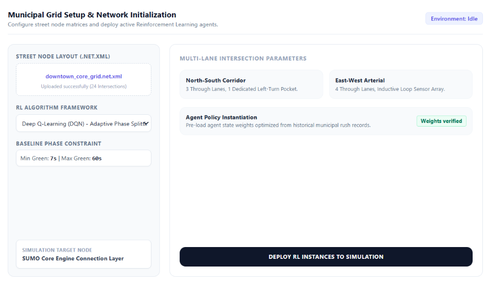
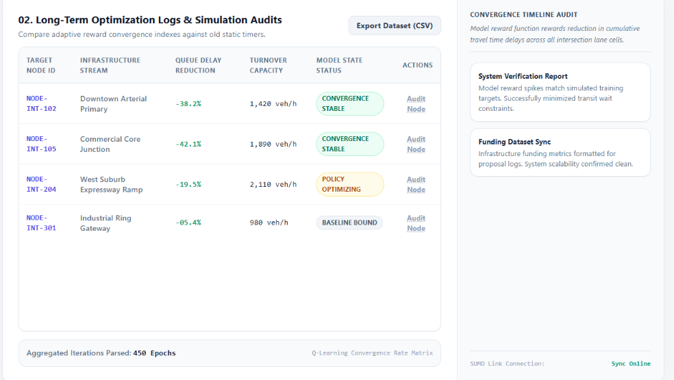

Requirement Gathering & Discovery
Mapping out urban grid bottlenecks and analyzing traffic sensor limitations to replace legacy static clock routines with an active reinforcement learning reward loop.
Urban traffic congestion remains an incredibly costly and systemic global challenge, driven primarily by the rigid nature of traditional traffic light installations that rely on fixed timers and fail to adapt to live vehicle conditions. This project targets that infrastructure vulnerability by utilizing advanced reinforcement learning models to establish a completely adaptive platform. The system continuously interprets intersection data streams, intelligently calculating traffic adjustments based on real-time vehicle loads to systematically eliminate bottleneck patterns and smooth transit flow across modern smart city layouts.

The live control workspace is designed to operationalize model policy outputs into immediate intersection-level actions. Engineers can inspect node-specific state snapshots, monitor lane pressure indicators, and verify policy transitions generated by reinforcement learning loops as traffic density changes. This view keeps operational teams aligned on model-driven interventions before exporting broader city-level strategy updates.

Architected to validate model accuracy, system scaling, and infrastructural efficiency over extensive operational timelines. To ensure reliable city deployment, a performance reward function is established to prioritize reduction in queue delays and intersection wait metrics. Over hundreds of simulated iterations, the agent refines its timing behaviors, generating heavy analytical performance logs. Users can isolate individual street nodes, compare modern adaptive reward spikes against old static timer records, and export comprehensive dataset tables tailored for infrastructure funding proposals.

Mapping out urban grid bottlenecks and analyzing traffic sensor limitations to replace legacy static clock routines with an active reinforcement learning reward loop.
Creating an intuitive, map-driven dashboard dashboard that transforms dense simulation and mathematical modeling data into clean, understandable geographic telemetry layers.
Constructing high-density data tables, timeline tracking views, and metric lists that enable civil engineers to audit agent reward functions and traffic throughput performance seamlessly.